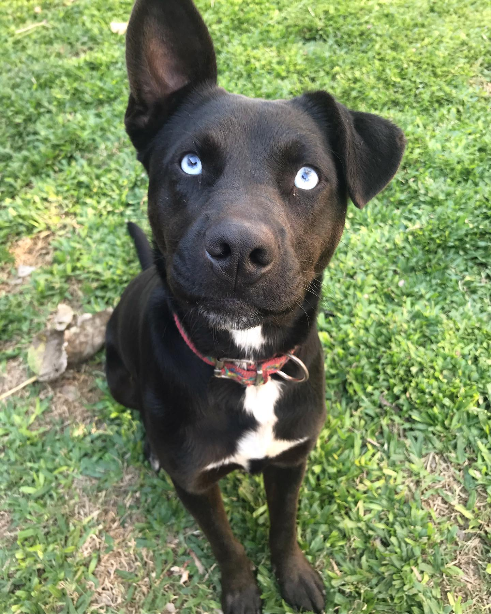
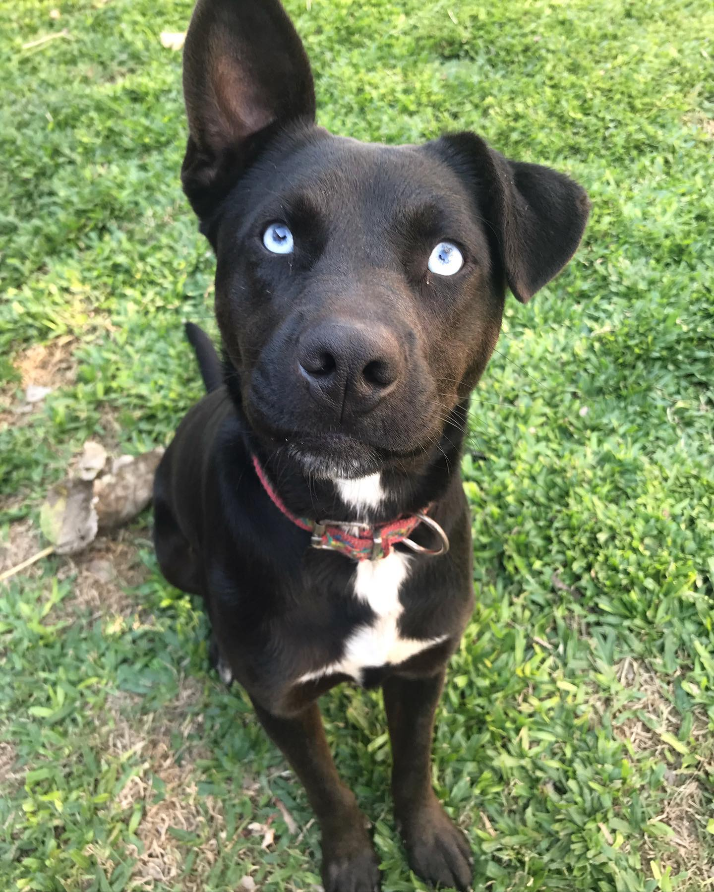

En la mayoría de los casos, adoptar significa darle una segunda oportunidad a un animal que ha sufrido un proceso de abandono, y en ocasiones maltrato. Acogerlo en tu casa de por vida y darle la estabilidad, los cuidados y el cariño que necesita va a ayudarlo a que recupere su confianza y su autoestima.
Muchos de ellos presentan traumas causados por el maltrato y el abandono, puedes cambiar su vida y volverlos a hacer creer en el ser humano dándoles amor y cuidado. Aprenderás lo que es tener un amigo fiel que estará siempre a tu lado.
 
